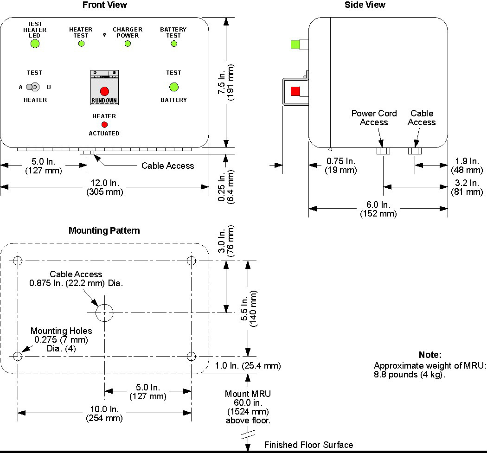
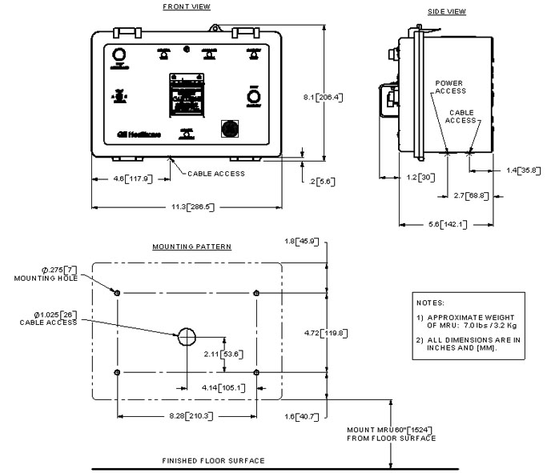

Install the MRU(s) to comply with local requirements. (A stud finder can help locate wall framing.)
Install the fuse (F2) shipped with each MRU.
Illustration 2: Dimensions for Mounting Original MRUs

Illustration 3: Dimensions for Mounting New MRUs
